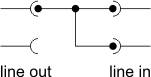
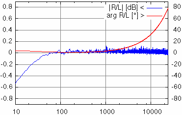
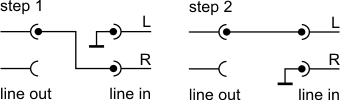
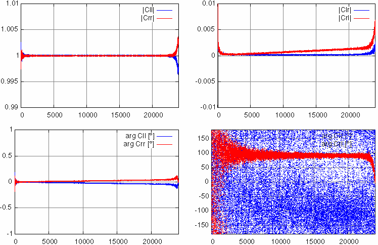

Release: 0.2
→ Index → Overview → Parameters → Calibration → Download → History → Todo → BuildThis program analyzes incoming PCM data on the fly and passes the results to files and optional a graphing utility like Gnuplot. The C++ source code is available and should be portable to other platforms at reasonable effort. The open source library FFTW version 2.x is utilized for fast operation. The software is optimized for sound devices as for the A/D conversion.
Analyze reads 16 bit 2 channel PCM Data from stdin, a file and does the analysis on the fly. The result is written to the file data.dat and/or the screen (stderr) every time new data is available. Optionally a command could be passed to stdout when new data is available, e.g. to synchronize gnuplot. The program terminates, if the indicated number of turns has completed, no more input is available or an interrupt signal is received (Ctrl-C).
The (platform independent) recording of the PCM stream as well as some buffering, to handle real time streaming, must be provided with other platform specific tools like playrec (OS/2), or /dev/snd/pcm... (Linux).
Analyze currently supports two analysis modes:
FFT analysis (option mfft)
The FFT mode is intended for measurement of impedance and transfer functions. It calculates the ESR ESC and ESL by fitting the FFT result. Therefore the weighted averages in the interval [famin, famax] are calculated as follows:
ESR := < ai >
ESL := < bi / ω >
ESC := < −bi · ω >Of course, only one of ESL or ESC is reasonable, the positive one. The standard deviation of the above average values gives a coarse estimation of the reliability.
You will not get reasonable results when the impedance contains inductive and capacitive components or their equivalent values change with frequency. In this case you should view the frequency dependent results in the data file.
The same applies if you are measuring transfer functions, of course.
LCR analysis with PCA (option mpca)
The PCA mode (Principal Component Analysis) uses a linear combination of the following functions to reproduce U(t):
- a constant (DC offset, parasitic),
- R·I(t) (ohmic resistance),
- dI(t)/dt (inductance),
- ∫ I(t) dt (capacity) and
- x·t (drift of the DC offset, parasitic)
This is a very fast way to analyze a series of resistor, inductor and capacitor. The complexity is O(n) in the number of samples.
It works as long it is a series. You cannot measure the electrolytic capacitors this way, because there are other effects included.The PCA method will not write a data file.
FFT and PCA can be combined. Then you will get the more reliable LCR values of the PCA method together with the detailed frequency dependent results from FFT in the data file.
| Option | Bedeutung | Standard | Kategorie |
|---|---|---|---|
| ainc | incremental mode |
off | input data |
| al | average over multiple cycles of samples |
1 (off) | input data |
| bin | average FFT channels |
1 (off) | FFT parameters |
| bn | analysis block size | 8192 | general options |
| ca | add samples to bins |
1 (off) | input data |
| df | name of the FFT data file |
data.dat | FFT parameters |
| exec | execute shell command after data available |
off |
control options |
| famin famax | frequency range for LCR analysis | fmin .. fmax | FFT parameters |
| fbin | average FFT channels with logarithmic bandwidth |
0 (off) | FFT parameters |
| finc | linear increment for used FFT channels |
1 | FFT parameters |
| flog | logarithmic increment for used FFT channels | 0 (off) | FFT parameters |
| fmin fmax | frequency range for analysis |
0 .. Nyquist freq. | FFT parameters |
| fq | sampling frequency | 48000 | input data |
| g2f | name of validation file of gain calibration | gainD.dat | calibration |
| gd | verify gain calibration | off |
calibration |
| gf | name of gain calibration file | gain.dat | calibration |
| gg | generate gain calibration file | off | calibration |
| gr | use gain calibration file | off | calibration |
| h/f | use 1/f weight |
default weight |
FFT parameters |
| harm | take harmonics into account |
0 | FFT parameters |
| hd | use weight function for differential input mode | default weight | FFT parameters |
| he | disable weight function |
default weight | FFT parameters |
| in | name of input file | stdin | input data |
| ln | number of loops | 1 | control options |
| loop | infinite number of loops | aus | control options |
| lp | pause at matrix calibration | 10 | calibration |
| lvl | noise level for automatic weight function |
1 | general options |
| mfft mpca | operation mode |
none |
control options |
| mst | two channel mode | off | FFT parameters |
| olf olc | file name and column to overwrite nominator |
none / 1 | input data |
| orf orc | file name and column to overwrite denominator (reference) |
none / 1 | input data |
| pdc | purge first frequency channels | 1 (purge DC) | FFT parameters |
| phcc | fit group delay |
off |
FFT parameters |
| phl | subtract constant group delay | 0 (off) | FFT parameters |
| plot | write command to stdout after data available | off | control options |
| psa | discard first samples |
0 (off) | input data |
| pte | read input data till the end |
off | input data |
| rf | name of raw data file | raw.dat | input data |
| rref | reference resistor |
1 | general options |
| scm | input mode |
0 | input data |
| wd | (over)write FFT data file on the fly |
off | FFT parameters |
| wf | name of window function file | window.dat | FFT parameters |
| win | select window function | off (rectangular) |
FFT parameters |
| wr | write raw data | off | input data |
| ww | write window function | off | FFT parameters |
| xb | swap bytes of PCM data (change endianess) | off | input data |
| z2f | name of validation file of matrix calibration | zeroD.dat | calibration |
| zd | validate matrix calibration | off | calibration |
| zf | name of matrix calibration file | zero.dat | calibration |
| zg | generate matrix calibration file | off | calibration |
| zn | normalize amplitudes | off | FFT parameters |
| zr | use matrix calibration file | off | calibration |
- infilename - name of input file
- Read PCM-data from filename (instead of stdin). The file name could be a transient source like a pipe or a character device.
- rffilename - raw data file
- Name of the output file for raw data (option wr). raw.dat by default.
- wr - write raw data
- Write raw data to file. These is the raw input data without any processing so far, except for option psa. It is intended for diagnostics only. → file format
- xb - swap bytes of PCM data
- Change endianess of input data.
- psanum - discard first num samples
- Use this to discard spikes at the starting or to reach a steady state. You may also use this option to discard headers from PCM files like RIFF wave format.
- pte - discard trailing input
- If the analysis has completed (option ln) the input is read continously, but the data is discarded. This can be useful if the data source behaves unexpectedly if the data drain is closed. This also causes analyze not to terminate before either the input stream is closed or an interrupt signal is received.
- canum - add num samples
- Alwas add num subsequent samples before any further processing. This can be used to achieve a lower effective sampling rate at better SNR. Note that this is no appropriate down sampling, but only to reduce ADC noise.
Without an explicit value for num, 2 samples is assumed.- scm0, scm1 oder scm2 - input mode
- scm0 – nominator (U(t)) := channel 1, denominator (I(t)) := channel 2
scm1 – differential mode: nominator (U(t)) := channel 1, denominator (I(t)) := channel 2 − channel 1
scm2 – reverse mode: nominator (U(t)) := channel 2, denominator (I(t)) := channel 1
Differential mode is useful if you want to do impedance measurements without a differential instrumentation amplifier. You could simply use a series of a reference resistor with the unknown impedance. But note that the difference of similar numbers may become very sensitive to channel differences for low currents. It is recommended to use at least the differential weight function in FFT mode to reduce this kind of errors.- alnum - add num cycles
- Add num cycles of raw input data before starting analysis. This improves the SNR by the square root of num. Note that the reference signal must be cyclic to use this option.
This is effectively the same than taking a twice as large FFT size and discarding every odd frequency channel, but it is significantly faster.- ainc - incremental mode
- The raw input data is added in sets of the analysis length. This causes a increasing accuracy by building an average over more and more cycles. Note that the reference signal must be cyclic to use this option and it must be exactly synchronized to the sampling frequency.
This option is an alternative to sweep measurements.- olccolumn - column to override nominator
- Column in the file to override the nominator. Requires olf.
- olffile - override nominator
- Override nominator (left channel by default) with a column from file.
- orccolumn - column to override denominator
- Column in the file to override the denominator. Requires orf.
- orffile - override denominator
- Override denominator (right channel by default) with a column from file.
- lnnum - number of loops
- The program terminates automatically after num analysis cycles. By default only a a single analysis is done.
- loop - infinite analysis
- The program continue to analyze until the input data has been finished or it is interrupted by a signal. This is useful to reflect changes of you measurement item in near real time.
It is recommended to check whether real time processing is possible with a reasonable system load with a limited number of cycles before using this option on a infinite transient data source.- mfft - FFT mode
- Activate FFT mode for analysis. At least one analysis mode must be selected.
- mpca - PCA mode
- Activate PCA mode for analysis. At least one analysis mode must be selected.
- execcommand - execute shell command
- Each time a analysis is complete and the data has been written command is passed to system(). Note that analyze waits for the command to complete. This gives you exclusive access to the data files but it may also interfere with the real time processing of the input data. You may alternatively consider to pipe the command to stdout instead (option plot), if you do not need this kind of synchronization.
- plotcommand - pipe command
- Write command to stdout each time an analysis has completed. You can use this to synchronize plot programs when new data arrives. Note that analyze will not wait for any command completion.
- fqfreq - sampling frequency of input data
- This parameter should always be specified. analyze cannot read headers of PCM data files.
- bnnum - analysis block length
- Number of samples for one analysis cycle. This is also the length of the FFT. It is strongly recommended to use a power of 2 if you activated the FFT mode. The number of samples here counts after an options averaging with option ca.
The default values is 8192.- rrefres - reference resistor
- Scale the denominator by res before any further processing. By default no scaling takes place.
This option could be used to compensate for constant factors of your measurement setup like a reference resistors to measure the current or the amplifier gain.
- faminfreq and famaxfreq - frequency range for LCR analysis
- Minimum and maximum frequency for LCR data fit. This could be used to adapt the bandwidth of your setup. In contrast to fmin and fmax this has no influence on the data written to the result file. It applies only to the sreen output (to stderr).
- fminfreq and fmaxfreq - frequency range
- Minimum and maximum frequency for the FFT analysis. This option applies to all processing steps including calculation of calibration etc. It could be used to remove artifacts at the frequency limits for graphical output.
- h/f - use 1/f weight
- This weight function can be useful for measurements with pink noise.
- hd - weight function for differential mode
- Use adapted weight function for differential input mode scm1.
- he - disable weights
- Use an equal distributed weight function. Use this if your input SNR has no correlation with the signal amplitude at a certain frequency.
- lvllevel - noise level
- Frequencies with amplitudes below level are weighted close to zero.
- binsize - average size FFT channels
- Calculates the average over size subsequent frequency channels before any further processing. The averaging is done in polar coordinates so phase noise does not degrade the amplitude.
This could be used to reduce noise if the measurement response is not likely to change fast with frequency. But if yur reference signal is periodic you should prefer a shorter block length together with averaging input samples.- fbinfactor - average FFT channels logarithmically
- Calculates the average over size subsequent frequency channels to get approximately logarithmic frequency bins. The channels are averaged as long as they fit into the interval [f, f · (factor + 1)]. This option is particularly useful if the properties of the object tend to change over log f rather than f. In other words if the result is shown with logarithmic frequency axis.
- fincchannels and flogincrement - linear and logarithmic increment for used frequencies
- This is intended to be used with custom, discrete energy distributions. Subsequent used frequencies have at least the distance fn+1 = fn · channels + increment rounded to the closest frequency in the FFT result. Any channels in between are ignored.
- The setting must be chosen to match the reference signal.
- harmn - use harmonics
- With this option the first n harmonics of any used frequency is reserved. In fact it is assumed that the reference signal does not contain energy at these frequencies and any response is the result of harmonic distortion. This could be used to do very fast measurements of harmonics of loudspeakers.
The setting must be chosen to match the reference signal. See analysis of harmonics.- mst - two channel mode
- In two channel mode the used FFT frequencies are associated with two distinct channels alternatingly. This applies to any averaging operation. A column in the result files indicates the channel association. See multi multi channel measurements.
- pdcnum - purge low FFT channels
- This assigns zero to the first num channels of the FFT result. It is alternative to fmin that does not remove the lines from the data file and avoids uninitialized values in calibration files. But be careful not to use these coefficients as denominator of some following calculation step. To avoid division by zero exceptions a very small value is used rather than zero.
- phcc - fit group delay
- This option fits the group delay by calculation of the center of the cross correlation of the wanted signal and the reference signal.
- The option is required if the wanted and the reference data are only synchronized at the sampling frequency but not at the origin of the cycle. Otherwise degradation of amplitude at higher frequencies when averaging of frequency channels is used may occur, because of errors in phase unwrapping. With this option activated the result is written to stderr additionally. The fitted group delay is removed from the output file in this case.
- phldelay - subtract group delay
- Adjusts the phase data by exp(I ω delay). delay is in seconds.
- dffilename - data file name
- Name of the file to write FFT data with option wd, data.dat by default.
- wd - write FFT data
- Write detailed result of FFT analysis. → file format
- wffilename - window file name
- File to write the window function with option ww, window.dat by default.
- wintyp - window function
- Aplly window function to data before FFT. The following window functions are implemented:
win0 – rectangular = none
win1 – Bartlett window = triangular, abs(2 i/n 1)
win2 – Hanning window, .5 + .5 cos(2π i/n)
win3 – Hamming window, .54 + .46 cos(2 i/n)
win4 – Blackman window, .42 + .5 cos(2π i/n) + .08 cos(4π i/n)
win5 – Blackman Harris window, .35875 + .48829 cos(2π i/n) + .14128 cos(4π i/n) + .01168 cos(2π i/n)
A window function is only recommended if the reference signal cannot be made cyclic.- ww - write window function
- This option writes the selected window function (option win) to a file (option wf). → file format
- zn - normalize amplitudes
- Adjust the sum of the complex amplitudes of nominator and denominator to 1. This has no effect on impedance or transfer function, but it gets important if you relate data of different measurements as e.g. the matrix calibration does.
- gg - do gain calibration
- The left and right channel is assumed to sample the same signal. The difference in the transfer functions is written to the calibration file. → file format
- gr - apply gain calibration
- The results from an earlier gain calibration are read from file and applied to the data. → file format
The calibration is arbitrarily applied to the nominator signal. So you should not abuse the gain calibration to compensate for complex transfer functions, because the weight functions would be affected.- gf - gain calibration file
- File name for gain calibration (read and write). gain.dat by default.
- gd - verify gain calibration
- The result from an earlier gain calibration is read from file and applied to the data before another gain calibration is done.The residual result is written to the gain verification file. The file format is the same as for the calibration file. The option is mainly for diagnostic purposes.
- g2ffilename - gain verification file
- Name of the file for validation result of the gain correction. See option gd.
- zg - do matrix calibration
- Generate the matrix calibration file. The Matrix calibration operates in two steps. In the first step the reference signal should be zero, in the second step the wanted signal should be zero. Between the steps there is a configured pause to adjust the setup. See documentation for further details.
- zr - apply matrix calibration
- Use the matrix calibration from file and apply it to the input data. → file format
- zf - matrix calibration file
- Overwrite the name of the matrix calibration file (read and write). zero.dat by default.
- zd - verify the matrix calibration
- The results from an earlier matrix calibration are applied to the input data while another matrix calibration is done. The residuals are written to the matrix verification file. This option is mainly for diagnostic purposes.
- z2ffilename - matrix verification file
- Overwrite the name of the matrix calibration verification file. zeroD.dat by default.
- lpnum - pause between matrix calibration steps
- Number of cycles between the tho steps of the matrix calibration (option zg and zd). Note that the effective time between the steps also scales with the block size.
@@@TODO
All files are ASCII, with blank separated, numeric columns. Currently there is no header line, but this may change in Future. A header line will start with #.
Column Symbol Description [1] f Frequency [2] |U| Amplitude of U(f) or nominator respectively
[3] arg U Phase angle of U(f) or nominator respectively in degrees
[4] |I| Amplitude of I(f) or denominator respectively
[5] arg I Phase angle of I(f) or denominator respectively in degrees
[6] |U/I| Amplitude of the impedance U(f)/I(f) or transfer function [7] arg U/I Phase angle of the impedance U(f)/I(f) or transfer function in degrees
[8] re U/I Real part of the impedance U(f)/I(f) or transfer function [9] im U/I Imaginary part of the impedance U(f)/I(f) or transfer function [10] weight Relative weight [11] delay Group delay d(U/I)/dω
[12] hamonic Ordinal of the harmonic. Negative values indicate the second channel in case two channel mode is activated From the above columns you may calculate the following parameters for one-port measurements:
Symbol Descriptioc Formula Unit Remarks ESR equivalent series resistor [8] · Rref Ω
ESC equivalent series capacitor
-1 2π · [1] · [9] · Rref F only for [9] < 0 ESL equivalent series inductor
[9] · Rref 2π · [1] H only for [9] > 0 |Z| absolute value of the impedance [6] · Rref Ω
Q quality factor
|[9]| / [8]
Column Symbol Description [1]
f Frequency
[2] re Real part of gain difference [3] im Imaginary part of gain difference [4] abs Absolute value of gain difference [5] arg Phase angle of gain difference in degrees On input (option gr and gd) only the first three columns are used.
Column Symbol Description [1]
f Frequency [2] re cll Real part of coefficient cll [3] im cll Imaginary part of coefficient cll [4] re clr Real part of coefficient clr [5] im clr Imaginary part of coefficient clr [6] re crl Real part of coefficient crl [7] im crl Imaginary part of coefficient crl [8] re crr Real part of coefficient crr [9] im crr Imaginary part of coefficient crr [10] abs cll Absolute value of coefficient cll [11] arg cll Phase angle of coefficient cll in degrees
[12] abs clr Absolute value of coefficient clr [13] arg clr Phase angle of coefficient clr in degrees [14] abs crl Absolute value of coefficient crl [15] arg crl Phase angle of coefficient crl in degrees [16] abs crr Absolute value of coefficient crr [17] arg crr Phase angle of coefficient crr in degrees The file contains an array of complex 2×2 matrices
. On input (option zr and zd) only the first 9 columns are used. → matrix calibration
cll clr crl crr The physical meaning of the coefficients is:
Coefficient Meaning cll Channel 1 gain
clr Cross talk from channel 2 to channel 1
crl Cross talk from channel 1 to channel 2
crr Channel 2 gain
Column Symbol Descroption - line number
sample index n
[1] win(n) Relative value of the window function at index n
Column Symbol Description - line number
sample index n
[1] L(n) Channel 1 sample value
[2] R(n) Channel 2 sample value
The simple gain calibration mode only takes care of the differences in the transfer function between the two input channels. This is sufficient to compensate for tolerances and phase differences between the channels. This is particularly important in differential scan mode.
Note that the gain calibration does not compensate for the absolute transfer function of the sound device in any way. It does not even distinguish between the transfer function of the line output stage and the transfer function of the line input.
How to do gain calibration

Schematic how to prepare for gain calibration.Connect both line in channels to one line out channel. Play a white noise and activate the gain correction mode with option gg. The FFT and sampling parameters should match the parameters used for the subsequent measurements.
For high precision it is recommended to use a cyclic reference signal that exactly match the FFT length. You could use the program noise to generate the reference. For synchronized measurements it is essential that the sampling rate of the DAC exactly matches that of the ADC, i.e they have to use the same clock oscillator. This requirement is usually fulfilled if both are on the same sound device. If you have different devices for analog input and output, then you need a world clock.
Result

Example of gain correction: Terratec XLerate (Aureal AU8820 chip) at 48kHz and an FFT length of 65536 samples, average ofer 10 cycles.
The deviation in the amplitude is with < 0,2 dB pretty good, but the channels are obviously not sampled simultaneously. The time difference of ¬ sample at the Nyquist frequency point to a serial conversion with two way oversampling.The result of the gain calibration is the complex and frequency dependent quotient:
gain_korr(f) = FFT(channel 2) FFT(channel 1) The magnitude of this quotient is a measure of the degree of gain difference between the two channels. A typical value is mainly independent of the frequency and close to but not exactly one. This is due to tolerances in resistors. At low frequencies the difference may increase due to tolerances in the coupling capacitors.
The phase angle of the correction shows the synchronization of the channels. Beyond the small differences due to tolerance of the coupling capacitors there are usually no particular deviations. But some sound devices sample the two channels not simultaneously, but alternating. In this case there is a linear phase shift.
Using the correction
When using the correction is used with option gr it is only applied to channel 1. So do not use this correction to compensate for a complex transition function or there will be an impact on automatic weight function.
The simple gain calibration method above does not compensate for cross talk. So there is a superior calibration method called matrix calibration. It should be preferred at least for impedance measurements.
Using Lideal ∝ U and Rideal ∝ I · Rref (L = channel 1, R = channel 2) the real impedance is:
Z = Lideal · Rref Rideal But in fact you can't see Lideal and Rideal. What you really record is Lreal and Rreal, a transformation:
Lreal = cll clr · Lideal Rreal crl crr Rideal Of course, all the coefficients cxx are complex and frequency dependent.
How to do the matrix calibration
Impedance measurements
The matrix calibration is a two point calibration. In fact you do two calibration measurements. One with Z = 0 (Lideal = 0) and another with Z = ∞ (Rideal = 0), in fact a short cut and no connection. The advantage is that this does not only compensate for the sound device but also for the whole measurement setup.
Transfer functions, two port measurements

Schematic how to prepare for matrix calibration of measurements of transfer functions.In case of two port measurements you usually cannot compensate for the setup. Then you have to compensate for the sound device only. The first calibration is done with the reference signal only connected to channel 2 (R) and channel 1 (L) grounded. The second calibration is done the other way around.
Calibration sequence
When the matrix calibration is initiated with option zg, analyze takes the following steps in sequence:
- Discard the first samples. (option psa)
- Record n cycles (option ln) of data.
- Output a message to setup for the next step to stderr.
- Discard some cycles. (option lp)
In this time you have to change the setup for step two.- Record another n cycles.
- Write the result file (option zf) and terminate.
Important notes
It is essential to use absolutely the same reference signal in both steps. The reference therefore must be exactly reproducible. So it cannot be done with white noise but must by cyclic. This implies to use the same output channel of the sound device, too. It is also essential the the phase of the reference signal is 100% correlated in both steps. This is the reason why both measurements have to be done at one single run without closing the sound device in between. The synchronization of the input (ADC) and the output (DAC) have to be stable within less than one sample over the whole measurement. This is only possible if both are controlled by the same crystal oscillator. Fortunately this is naturally ensured as long as both are on the same sound device.
Result
In theory the matrix correction omits all linear errors without the need of an absolute reference. Practically this only works for the correction of sound device itself. For impedance measurements there is one degree of freedom to much. You know neither Rideal at Z = 0 nor Lideal at Z = ∞ and they are not necessarily the same. You could eliminate the additional degree of freedom if you assume that Uref ∝ Lideal + Rideal => Rideal at Z = 0 equals Lideal at Z = ∞ (see option zn). But this introduces the systematic error that the high current at Z = 0 causes an additional voltage drop at inductance of the wires.

Example of matrix calibration result: on board Realtek ALC650 codec at 48 kHz sampling rate and a self-made probe with 200Ω Rref and an FFT length of 65536 samples, averaged over about 10 cycles.
The graphs show the diagonal (left) and the non diagonal (right) matrix elements, each with amplitude (top) and phase angle in degrees (bottom).
You see a capacitive cross talk from channel 1 to channel 2. The asymmetric cross talk is due to the probe.
The phase response of cll and crr shows a delay of about 12ns (!) between both channels. Note the extremely high accuracy in spite of the 20æs sampling resolution.
clr is that small (about -70 dB), that the phase (blue) is nearly undetermined.Using the matrix correction
The matrix correction is applied to the measurement data with option zr. This calculates the inverse transformation matrix and applies it to the input data before the data is passed to the FFT analysis.
-1
Lideal = cll clr · Lreal Rideal crl crr
Rreal